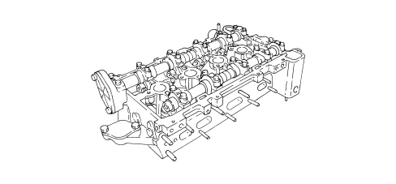

GENERAL REMARKS - CYLINDER HEAD(S)
- Path
- Descriptions > 10 ENGINE > 1016 CYLINDER HEAD/S > GENERAL REMARKS - CYLINDER HEAD(S)
- Kind
- system description
- Applies to
- engines: 2.2; all production periods
- Interactive page
- https://sloeber94.github.io/elrnDB-fCrm/en/#/194002106
Applies to: engines: 2.2; all production periods
The cylinder head is one-piece in aluminium alloy and silicone.
The four valves per cylinder are fitted in guides arranged in a V and driven by two camshafts via hydraulic tappets.
The arrangement of the spaces allows the combustion chamber to house:
- the four valve heads
- the spark plug opening
with the advantage of improving the thermal efficiency of the engine and reducing harmful exhaust emissions.
The valve guides are an interference fit in the cylinder head seats.
A special reamer is used to produce the correct inner diameter after fitting.
